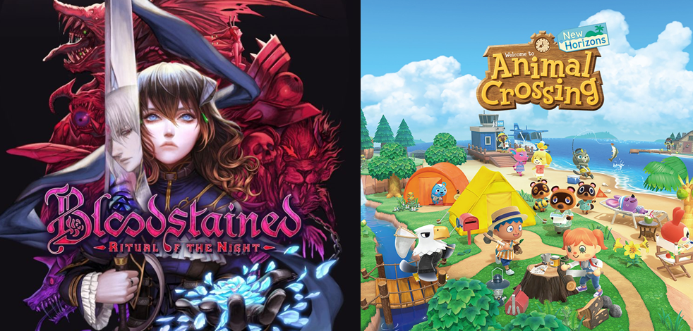
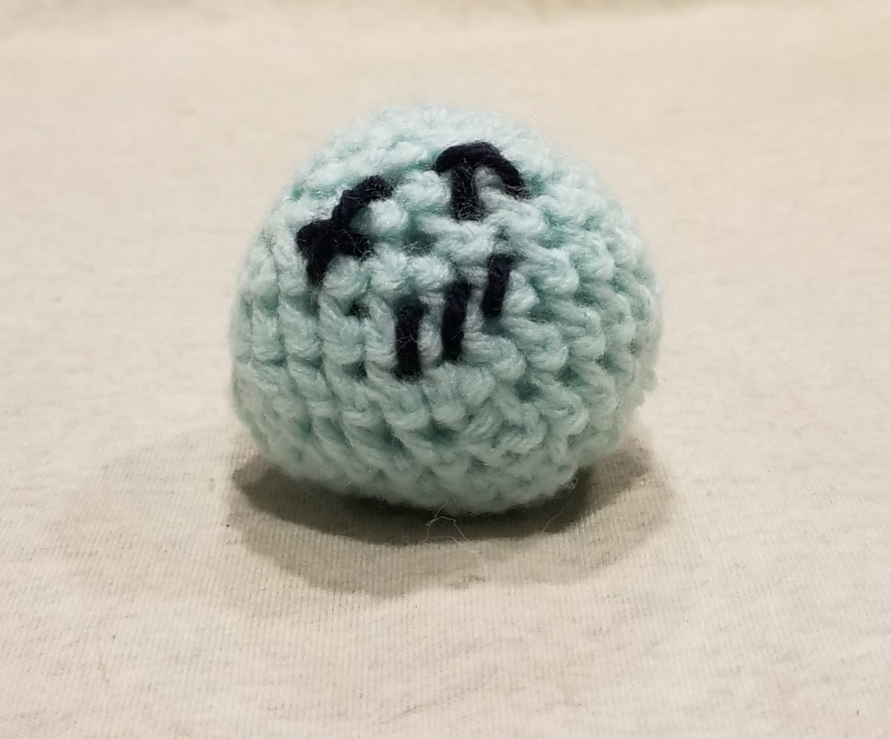
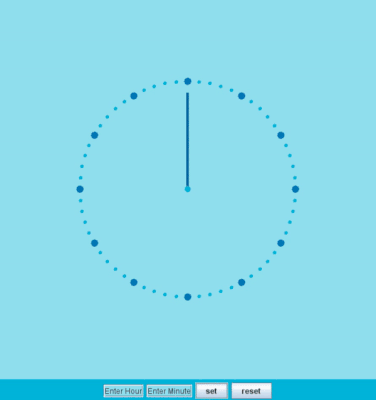

Hobbies

Video Games
These are two of the games I've been obsessed with and I have more hours in them than I am willing to admit.

Crochetting
This is Harold the bodyless head that I made. I'm new to crochetting and he is the first attempt at stuffed toys.
Projects

I don't know what to call this
This is a project I did for one of my CS classes. I forgot what it was exactly but it's fun to look at. It is set up so the number of "trains" is equal to the track it's on.

Clock
This is a project from one of my CS classes. It is a functional clock that let's you set and reset the clock. I sped it up to show it's full functionality